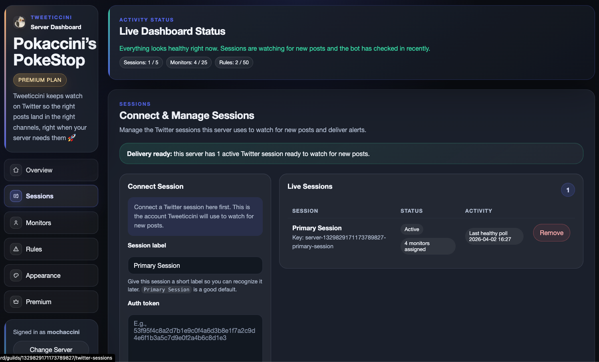
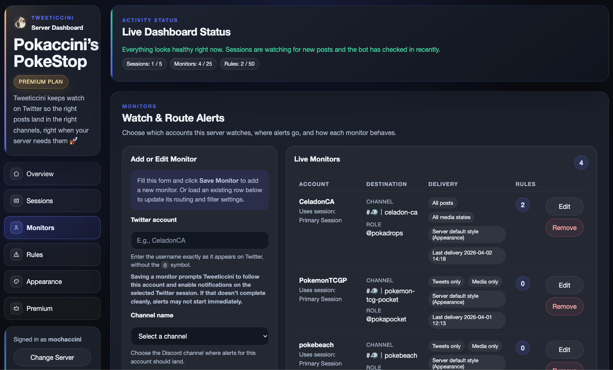
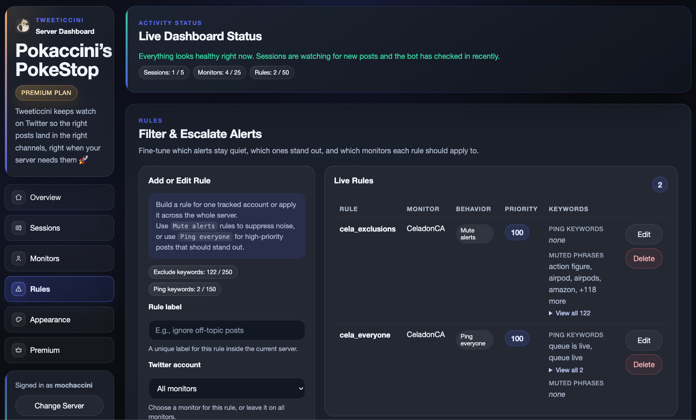
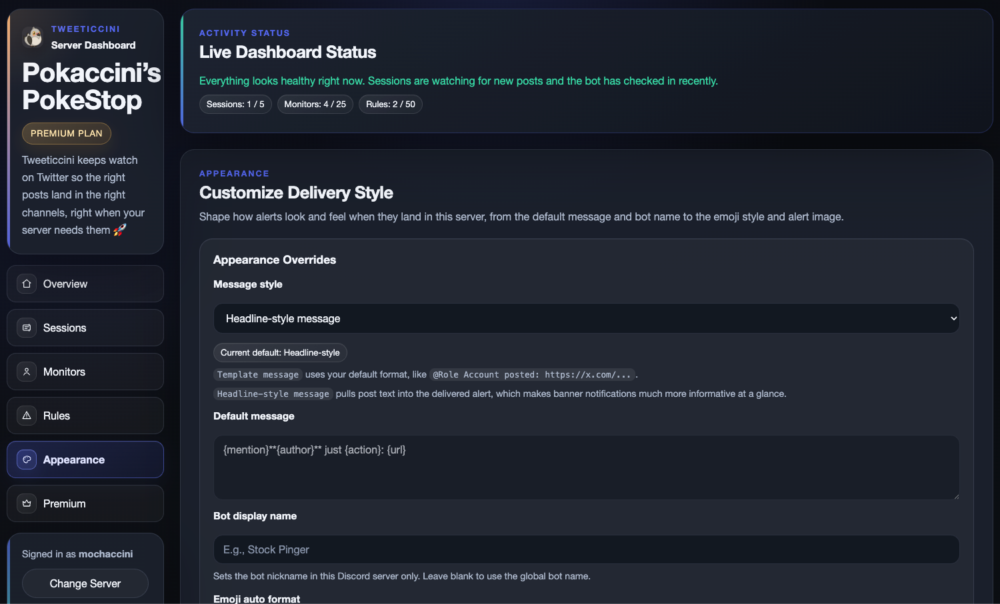

151 Booster Bundles restocked
Live Twitter monitoring, routed for Discord
Never miss high-value drops, updates, and announcements in Discord.
A source post appears, Tweeticcini evaluates your server settings, and the right alert reaches the right Discord channel.
Trusted by Discord communities active servers using Tweeticcini Priority polling can deliver the right alert in as little as 12 seconds.
Features
See how a post becomes the right Discord alert.
Adjust the example settings and watch the Discord alert update.
This demonstration uses fictional accounts and server settings.
Media: Optional
@Restock Alerts · Priority: High
Headline-style
Discord alert preview
#pokemon-restocks
Delivered
Real Discord Delivery
See what a live Tweeticcini alert looks like in Discord.
This example shows a real delivered alert with the original post, media, role mention, and destination-channel context.

More Than a Basic Relay
Tweeticcini does more than repost a link.
It evaluates the monitored account, filters, routing settings, mention targets, and available controls before delivering the final alert.
Dashboard Spotlight
One dashboard for sessions, monitors, rules, appearance, and premium controls.

Connect and manage Twitter/X sessions
See which sessions are active, which ones need attention, and which monitors depend on them.

Route monitored accounts to the right channels
Assign channels, role mentions, post filters, and per-monitor delivery behavior without editing commands.

Apply Premium Rules when precision matters
Promote urgent posts, mute noisy phrases, or scope behavior more tightly once a basic monitor is not enough.

Control how alerts read inside Discord
Choose headline-style or template messages and tune the visual presentation when Premium appearance settings are enabled.
How It Works
The core loop is simple: monitor, evaluate, route, deliver.
Connect a session
Connect an active Twitter/X session so Tweeticcini can monitor the accounts your server follows.
Add monitors
Choose the account, Discord channel, role mention, filters, and alert style.
Apply rules when needed
Use Premium Rules to prioritize urgent posts, mute unwanted phrases, or refine routing behaviour.
Deliver the final alert
Tweeticcini evaluates the server’s configuration and sends the final alert to the correct Discord channel.
Pricing
Start free, then upgrade when your server needs more speed or control.
Choose the plan that matches how many accounts you monitor and how much control your server needs.
| Free | Plus | Premium | |
|---|---|---|---|
| Price (monthly) | $0 | $3.99 | $6.99 |
| Polling speed | Standard (120s) | Balanced (45s) | Priority (12s) |
| Twitter sessions | 1 | 2 | 5 |
| Tracked accounts | 1 | 3 | 10 |
| Post + media filtering | ✓ | ✓ | ✓ |
| Role mentions | ✓ | ✓ | ✓ |
| Alert rules | ✕ | ✕ | 30 |
@everyone mentions |
✕ | ✕ | ✓ |
| Custom messages | ✕ | ✕ | ✓ |
| Delivery styling | ✕ | ✕ | ✓ |
| Get started | Add to Discord | Start Trial | Start Trial |
Independent support
Help keep Tweeticcini running
Tweeticcini is independently built and maintained. One-time support helps cover hosting and continued development.
“Love what you built! Keep it going!”
Trust
Why a Twitter/X session is required, how it is protected, and what administrators control.
Why a session is required
Tweeticcini uses a connected Twitter/X session to monitor the accounts configured by your server and continue checking for new posts.
How it is stored
Session information is encrypted at rest. Server administrators can remove or replace a connected session from the dashboard.
What happens if it expires
If a session stops authenticating, Tweeticcini surfaces an actionable warning so an administrator can reconnect it or switch affected monitors to another session.
What Tweeticcini can access
Tweeticcini uses the connected session only to monitor configured accounts. Server administrators control the session and can remove or replace it from the dashboard.
FAQ
Questions people usually ask before connecting a server.
Why is a Twitter/X session required?
Tweeticcini uses a connected session to watch the Twitter/X accounts your server cares about. Without that session, it cannot keep those monitor checks running.
What happens if the session expires?
The dashboard will show that the session needs attention, and alerts tied to that session may stop until a server admin reconnects it or swaps to another connected session.
How do I reconnect or revoke a session?
Open the dashboard, go to Sessions, and either reconnect the existing session or remove it entirely.
What Discord permissions do I need?
You need permission to manage the server in Discord to access the dashboard for that server. The bot also needs access to the channels where you want alerts posted.
How do trials, cancellation, and billing work?
Paid plans include a 7-day trial when available. You can start checkout from the dashboard and use the billing portal to review or cancel an active subscription.
Get Started
Bring the right Twitter/X updates into your Discord server.
Add Tweeticcini, connect a session, and create your first monitor from the dashboard. Start free and upgrade when your server needs more accounts, faster checks, or advanced routing.